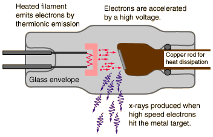

X-ray Tube

X-rays for medical diagnostic procedures or for research purposes are produced in a standard way: by accelerating electrons with a high voltage and allowing them to collide with a metal target. X-rays are produced when the electrons are suddenly decelerated upon collision with the metal target; these x-rays are commonly called brehmsstrahlung or "braking radiation". If the bombarding electrons have sufficient energy, they can knock an electron out of an inner shell of the target metal atoms. Then electrons from higher states drop down to fill the vacancy, emitting x-ray photons with precise energies determined by the electron energy levels. These x-rays are called characteristic x-rays.
|
Index |